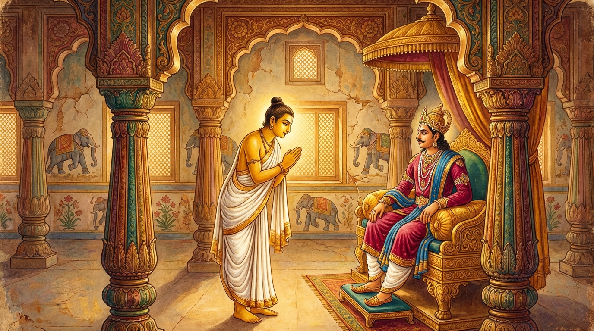

1. කල්යාණධම්ම ජාතකය (171)
“කල්යාණධම්මො” (යහපත් ධර්ම ඇති) යන මේ ධර්ම දේශනාව ශාස්තෘන් වහන්සේ ජේතවනයෙහි වැඩවසන සමයෙහි එක්තරා බිහිරි නැන්දා කෙනෙකු අරබයා දේශනා කළ සේක. සැවැත් නුවර සැදැහැති, ප්රසන්න වූ, තෙරුවන් සරණ ගිය, පන්සිල් සුරකින එක් කෙළෙඹි පුත්රයෙක් (ගෘහ මූලිකයෙක්) විය. හෙතෙම එක් දිනක් ගිතෙල් ආදී බොහෝ බෙහෙත් ද, මල්, ගන්ධ වර්ග සහ වස්ත්ර ආදිය ද රැගෙන “ජේතවනයෙහි බුදුරජාණන් වහන්සේ හමුවී බණ අසන්නෙමි” යි සිතා පිටත් විය. ඔහු එහි ගිය අවස්ථාවෙහි, ඔහුගේ නැන්දා (බිරිඳගේ මව) කෑම් බීම් රැගෙන දියණිය දැකීමට කැමැත්තෙන් ඔවුන්ගේ නිවසට පැමිණියාය. ඇය මඳක් බිහිරි ස්වභාවයෙන් යුක්ත ය. ඇය දියණිය සමඟ ආහාර අනුභව කොට, බත් මතය (ආහාර ගැනීමෙන් පසු ඇති වන නිදිමත ගතිය) දුරු කරමින් දියණියගෙන් මෙසේ ඇසුවාය. “දියණියනි, කුමක් ද? නුඹේ සැමියා නුඹ හා සමඟ සතුටින්, විවාද නොකරමින්, ප්රියමනාපව වාසය කරයි ද?” එවිට දියණිය මෙසේ පිළිතුරු දුන්නාය. “අම්මේ! කුමක් කියන්නෙහි ද? නුඹේ බෑණා යම්බඳු සීලයෙන් හා ආචාර සම්පත්තියෙන් යුක්ත ද, එබඳු වූ පැවිද්දෙක් පවා දුර්ලභ ය.” ඒ උපාසිකාව (නැන්දා) දියණියගේ වචනය හොඳින් වටහා නොගෙන “පැවිද්දෙක්” (පබ්බජිතො) යන වචනය පමණක් අල්ලාගෙන, “දුවේ! කුමක් නිසා නුඹේ සැමියා පැවිදි වූයේ ද?” යි මහ හඬින් ඇසුවාය. එය අසා නිවසේ සිටි සියලු දෙනා “අපේ කෙළෙඹි පුත්රයා පැවිදි වීලු” යයි කියමින් හඬා වැළපුණාහ. ඔවුන්ගේ ශබ්දය අසා දොරකඩින් ගමන් කරන්නෝ “මොකද මේ කෑගසන්නේ?” යි විමසූහ. “මේ නිවසේ කෙළෙඹි පුත්රයා පැවිදි වීලු” යයි ඔවුහු කීහ. ඒ කෙළෙඹි පුත්රයා ද දසබලයන් වහන්සේගෙන් බණ අසා විහාරයෙන් නික්ම නගරයට පිවිසියේය.
එකල්හි අතරමග දී එක් පුරුෂයෙක් ඔහු දැක, “මිත්රය, ඔබ පැවිදි වූයේ යැයි සිතා ඔබේ නිවසේ අඹුදරුවෝ සහ සේවක පිරිස හඬා වැළපෙති” යි කීවේය. එවිට ඔහුට මෙබඳු සිතුවිල්ලක් ඇති විය: “මොහු මා පැවිදි නොවී තිබියදීත් ‘පැවිද්දෙකැ’ යි කියයි. (මා ගැන) උපන්නා වූ මේ කල්යාණ ශබ්දය (යහපත් ආරංචිය) අතුරුදහන් නොකළ යුතුය. අදම මා විසින් පැවිදි වීම වටී.” ඔහු එතැනින්ම ආපසු හැරී ශාස්තෘන් වහන්සේ වෙත ගියේය. “උපාසකය, ඔබ දැන්ම බුද්ධ උපස්ථානය කොට ගොස්, දැන්ම නැවත පැමිණියේ මන්දැ?” යි විමසූ කල්හි, ඔහු ඒ කාරණය දන්වා, “ස්වාමීනි, ‘කල්යාණ ශබ්දය’ (යහපත් කීර්ති රාවය) නම් උපන් විට එය නැති කර දැමීම නොවටී. එබැවින් පැවිදි වනු කැමැත්තෙන් ආපසු පැමිණියෙමි” යි පැවසීය. ඔහු පැවිද්ද හා උපසම්පදාව ලබා මනාව ප්රතිපත්ති පුරන්නේ නොබෝ කලකින්ම රහත් බවට පැමිණියේය. මේ කරුණ භික්ෂු සංඝයා අතර ප්රකට විය. එක් දිනක් ධර්ම සභාවෙහි භික්ෂූහු කථාවක් ඉපිදවූහ. “ඇවැත්නි, අසවල් කෙළෙඹි පුත්රයා ‘උපන්නා වූ කල්යාණ ශබ්දය අතුරුදහන් නොකළ යුතුය’ යි සිතා පැවිදි වී දැන් රහත් බවට පැමිණ සිටියි.” ශාස්තෘන් වහන්සේ එහි වැඩම කර, “මහණෙනි, මා එන්නට පෙර කිනම් කථාවකින් යුක්තව සිටියහු ද?” යි විමසා, “මෙනම් කථාවෙනැ” යි කී කල්හි, “මහණෙනි, පැරණි පණ්ඩිතයෝ පවා ‘උපන්නා වූ කල්යාණ ශබ්දය විනාශ කිරීම නොවටී’ යයි සිතා පැවිදි වූවාහු ය” යි වදාරා අතීත කථාව ගෙනහැර දැක්වූ සේක.
අතීතයෙහි බරණැස් නුවර බ්රහ්මදත්ත රජු රාජ්ය කරන සමයෙහි බෝධිසත්වයෝ සිටු කුලයක උපත ලබා, වැඩිවියට පැමිණ, පියාගේ ඇවෑමෙන් සිටු තනතුරට පත් වූහ. ඔහු එක් දිනක් නිවසින් නික්ම රාජ්ය සේවය සඳහා ගියේය. ඉක්බිති ඔහුගේ නැන්දා “දියණිය දකින්නෙමි” යි ඒ නිවසට ගියාය. ඇය මඳක් බිහිරි ස්වභාවයෙන් යුක්ත ය (යනාදී සියලු විස්තර) වර්තමාන කථාවට සමාන ය. බෝධිසත්වයෝ රාජ්ය සේවය නිමවා තමන්ගේ නිවසට එනු දැක එක් පුරුෂයෙක්, “නුඹ පැවිදි වූයේ යැයි නුඹගේ නිවසේ මහා විලාපයක් පවතී” යැයි කීවේය. බෝධිසත්වයෝ “උපන්නා වූ කල්යාණ ශබ්දය (යහපත් කීර්තිය) අතුරුදහන් කිරීම නොවටී” යයි සිතා එතැනින්ම ආපසු හැරී රජු වෙත ගියහ. “මහා සිටුතුමනි, දැන්ම ගොස් නැවත පැමිණියේ මන්දැ?” යි රජු විමසූ කල්හි, “දේවයන් වහන්ස, නිවසේ ජනයා මා පැවිදි නොවී සිටියදීත් ‘පැවිදි වී යැයි’ සිතා හඬා වැළපෙති. එහෙත් උපන්නා වූ කල්යාණ ශබ්දය අතුරුදහන් නොකළ යුතුය. මම පැවිදි වන්නෙමි. මාගේ පැවිද්දට අවසර දෙනු මැනව” යි පවසා, ඒ අර්ථය ප්රකාශ කරනු වස් මෙම ගාථාවන් පැවසූහ:
“ජනේන්ද්රය (රජතුමනි), යම් කලෙක ලෝකයෙහි යමෙකු (කල්යාණ ධර්ම ඇත්තෙකැයි) යහපත් සම්මතයට පැමිණෙයි ද, නුවණැති මිනිසා (තමාට ලැබුණු) ඒ තත්ත්වයෙන් නොපිරිහිය යුතුය. ශාන්ත වූ සත්පුරුෂයෝ ලැජ්ජාව නිසා ද (පැවිදි) ධුරය භාර ගනිති.”

“ජනේන්ද්රය, ‘කල්යාණ ධර්ම ඇත්තෙකි’ යන යම් කීර්ති නාමයක් ලෝකයෙහි පවතී ද, ඒ සම්මුතිය අද මම මෙහි දී ලැබුවෙමි. මම ඒ කීර්ති නාමය සලකමින් (ආරක්ෂා කරමින්) මෙහි පැවිදි වන්නෙමි. මෙහි කාම සම්පත් විඳීමෙහි මගේ කැමැත්තක් නැත.”
යනුවෙන් මෙම ගාථාවන් වදාළහ.
එහි අර්ථය මෙසේය: කල්යාණධම්මො යනු යහපත් ධර්ම ඇත්තා ය. සමඤ්ඤං අනුපාපුණාති යනු යම් කලෙක සිල්වතා ‘කල්යාණ ධර්ම ඇති පැවිද්දෙකැ’යි යන මේ ප්රඥප්ති ව්යවහාරයට (සම්මතයට) පැමිණෙයි ද, තස්මා න හිය්යෙථ යනු එහෙයින් ඒ ලැබූ සාමාන්ය තත්ත්වයෙන් (පැවිදි බවෙන්) නොපිරිහිය යුතුය. හිරියාපි සන්තො ධුරමාදියන්ති යනු මහරජ, සත්පුරුෂයෝ නම් ආධ්යාත්මිකව උපන් ලජ්ජාවෙන් ද, බාහිර වශයෙන් හටගත් බියෙන් (ඔත්තප්පයෙන්) ද යන දෙකින් යුක්ත ව මේ පැවිදි ධුරය භාර ගනිති. ඉධ මජ්ජ පත්තා යනු මෙහි දී මා විසින් අද ලබන ලද්දකි. තාහං සමෙක්ඛං යනු ගුණ වශයෙන් ලබන ලද ඒ කීර්ති නාමය දෙස නුවණින් බලමින් මම (පැවිදි වෙමි). න හි මත්ථි ඡන්දො යනු මට ඡන්දයක් හෙවත් කැමැත්තක් නැත. ඉධ කාමභොගෙ යනු මේ ලෝකයෙහි ක්ලේශ කාමයන් හා වස්තු කාමයන් පරිභෝග කිරීම කෙරෙහි (කැමැත්තක් නැත).
බෝධිසත්වයෝ මෙසේ පවසා රජුගෙන් පැවිද්ද සඳහා අවසර ලබාගෙන, හිමාල ප්රදේශයට ගොස් ඍෂි පැවිද්දෙන් පැවිදි වූහ. (කලක් යෙදීමෙන්) අභිඥා හා සමාපත්තීන් උපදවාගෙන (මරණින් මතු) බ්රහ්ම ලෝකයෙහි උපන්හ.
බුදුරජාණන් වහන්සේ මේ ධර්ම දේශනාව ගෙනහැර දක්වා ජාතක කථාව පුර්වාපර සන්ධි ගළපා වදාළ සේක. “එකල රජතුමා වූයේ ආනන්ද තෙරුන් ය. බරණැස් සිටුතුමා නම් ලොව්තුරා බුදු වූ මම ම වෙමි.”
පළමුවන කල්යාණධම්ම ජාතක වර්ණනාව නිමියේය.